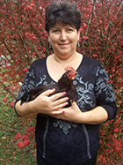
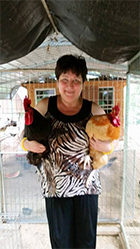
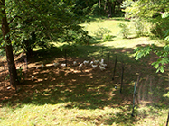
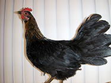
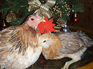

News
November 2014

On my way home, in downtown Chimney Rock I saw a small hen walking between the cars.
I parked my car immediately and I tried to catch her.
I asked 3 people to help me, but they could care less.
I was very close to catch her, but she escaped, run across the street. And then finally I succeeded! I was so HAPPY!
I told her, that she will have a great home with many, many other hens and roosters and she will never be homeless, in danger and hungry ever again!
It is a mystery where she came from, because Chimney Rock does not allow chickens - it's the town ordinance.
It was a miracle that she survived, because people don't care and she could be run over by a car.
Her name is Miri, because this was a Miracle!
On my way home with one hand I was driving and with the other I was holding her. When we arrived home, she attacked the food like is no tomorrow! Her belly by the end of the day was so full and rock hard, like no other. I am sure she will enjoy a good night sleep. Welcome home, Miri!
On my way home with one hand I was driving and with the other I was holding her. When we arrived home, she attacked the food like is no tomorrow! Her belly by the end of the day was so full and rock hard, like no other. I am sure she will enjoy a good night sleep. Welcome home, Miri!
May 2014

May 27, 2014 was a very special day, when Karen came to us with 2 roosters and a truckload of fencing, 2 big chicken coops and lots of love for the boys. As a caring mother she wanted to make sure they will have a good home. I never met someone like Karen, with such an amazing heart for the feathery children.
When I met Annamaria at the Charlotte Veg-fest, it was a Godsend. I knew after talking with her and seeing her photo albums of her rescued chickens that I could let them go and feel good about it. I know she has a special love in her heart for them and that they will be safe and live out their lives doing all the things chickens love to do. Once I got there with them and saw the nice place they would be staying I was so happy. Seeing the watermelon and cantaloupe and other goodies, I knew they would be eating great, just like they were used to.
I will forever be grateful to her and she has told me I can come and visit and that if I ever wanted them back, I would have them back. Maybe one day I can take them back, it would be awesome."
Here are Karen's words:
"They were dumped at a feed and seed store with a sign that read, very tame, raised by children. I stood there and wondered if they could have been Easter chicks and how wrong it was to just dump them now that they grew up and weren't as cute. What a betrayal. It was then when a couple walked up and the man said to the woman, 'look at those chickens, I would like some fresh chicken, if you cook em, I'll kill em.' I was appalled and went straight in bought them not knowing what in the world I would do with them. I called my landlady and told her what had happened and she said I could keep them till I found them a home. I was so picky about where they went that I could not let them go to just anyone and it took me quite a while to find the perfect home.When I met Annamaria at the Charlotte Veg-fest, it was a Godsend. I knew after talking with her and seeing her photo albums of her rescued chickens that I could let them go and feel good about it. I know she has a special love in her heart for them and that they will be safe and live out their lives doing all the things chickens love to do. Once I got there with them and saw the nice place they would be staying I was so happy. Seeing the watermelon and cantaloupe and other goodies, I knew they would be eating great, just like they were used to.
I will forever be grateful to her and she has told me I can come and visit and that if I ever wanted them back, I would have them back. Maybe one day I can take them back, it would be awesome."
May 2014

Mother's Day, May 11th, will always be remembered for the most heartbreaking rescue of 16 battery hens on their way to slaughter. The 8 hour, 450 mile round trip was exhausting, but very rewarding. We are very glad to have you, girls! Your real life begins now.
March 2014

This pretty hen was today's (03-31-2014) rescue.
She was wandering for many months on a great family's property, who fed her, but was not able to catch her until yesterday.
She survived the winter and was very ready to start a new life. Welcome home!
March 2014
Praise and gratitude for our first fundraiser
We are very grateful for all of you who were not afraid to make this long trip to our fundraiser in the pouring rain and bad weather! A handful of caring people make a big difference in supporting our cause.
Thank you all of you who helped and showed a great deal of understanding in our learning process, as we never did a fundraiser before and I never cooked and organized an event for this many people. I admit, it was overwhelming, because I wanted it to be perfect and remembered... The next one, I promise, will be less stressful and better!
Thank you all,
Annamaria, Paul and all the 45 chickens
Here are the comments so far:
Cathy Watson
We had a great time! Sorry the weather did not cooperate, we would have liked to see the chickens.
Food was very good too!
Guy
This was a great event. Thanks for Annamarie, Paul, and everyone else who put energy into making it happen.
A beautiful drive also.
Carrie Stilwell
It was a really fun gathering and the food was delicious. Thanks so much Annamaria and Paul for all your hard work and for hosting the Fundraiser. Nice community center too!
Frank C
Thanks for a different kind of Vegan food selection,it was great. Have never belong to a group where the food just continues to be awesome. Community Hall where event was held make it very comfortable for all. Thank you Annamarie and Paul for the love you have and show for all those beautiful Chickens. How do you keep that place so clean? You all did such a terrific job.
Zia Terhune
Great day...food was delicious and plentiful...Lafayette was the best auctioneer ever.
I hope this becomes an annual event.
We are very grateful for all of you who were not afraid to make this long trip to our fundraiser in the pouring rain and bad weather! A handful of caring people make a big difference in supporting our cause.
Thank you all of you who helped and showed a great deal of understanding in our learning process, as we never did a fundraiser before and I never cooked and organized an event for this many people. I admit, it was overwhelming, because I wanted it to be perfect and remembered... The next one, I promise, will be less stressful and better!
Thank you all,
Annamaria, Paul and all the 45 chickens
Here are the comments so far:
Cathy Watson
We had a great time! Sorry the weather did not cooperate, we would have liked to see the chickens.
Food was very good too!
Guy
This was a great event. Thanks for Annamarie, Paul, and everyone else who put energy into making it happen.
A beautiful drive also.
Carrie Stilwell
It was a really fun gathering and the food was delicious. Thanks so much Annamaria and Paul for all your hard work and for hosting the Fundraiser. Nice community center too!
Frank C
Thanks for a different kind of Vegan food selection,it was great. Have never belong to a group where the food just continues to be awesome. Community Hall where event was held make it very comfortable for all. Thank you Annamarie and Paul for the love you have and show for all those beautiful Chickens. How do you keep that place so clean? You all did such a terrific job.
Zia Terhune
Great day...food was delicious and plentiful...Lafayette was the best auctioneer ever.
I hope this becomes an annual event.
Chicken Rescue and Sanctuary featured The Daily Courier!
More great press about our mission and March fundraiser!
Read more here: Chicken Rescuers Hosting Event
More great press about our mission and March fundraiser!
Read more here: Chicken Rescuers Hosting Event
February 2014
Chicken Rescue and Sanctuary featured on WLOS ABC 13 News!
We recently had the opportunity to be featured on the news. It is really exciting to be gaining exposure for our cause.
You can view the news segment here: Animal Lover Plans Chicken Rescue & Shelter
Please feel free to share with others!
We recently had the opportunity to be featured on the news. It is really exciting to be gaining exposure for our cause.
You can view the news segment here: Animal Lover Plans Chicken Rescue & Shelter
Please feel free to share with others!
January 2014

Mother & Her Baby
Mother & Her Baby
New Rescues!
Monday night, January 6, 2014 was the most amazing and heartbreaking rescue of a mother and her baby accomplished by me alone in the freezing cold of 6°F. This mother and her baby daughter were left on the side of the road of a very busy street. No shelter, no food, no water, nothing—just the two of them in the freezing darkness. I put them under my coat and that's how I drove home for over an hour. They had been homeless for some time. I had always stopped by to feed them, but because they were very wild, it was not possible to catch them. I was wondering what kind of man would abandon these kind souls in a cruel way like this? They are adjusting very well to their new home. Touch heals, after all… No more homelessness, no more hunger! I am very glad that they are part of our family now.
Monday night, January 6, 2014 was the most amazing and heartbreaking rescue of a mother and her baby accomplished by me alone in the freezing cold of 6°F. This mother and her baby daughter were left on the side of the road of a very busy street. No shelter, no food, no water, nothing—just the two of them in the freezing darkness. I put them under my coat and that's how I drove home for over an hour. They had been homeless for some time. I had always stopped by to feed them, but because they were very wild, it was not possible to catch them. I was wondering what kind of man would abandon these kind souls in a cruel way like this? They are adjusting very well to their new home. Touch heals, after all… No more homelessness, no more hunger! I am very glad that they are part of our family now.